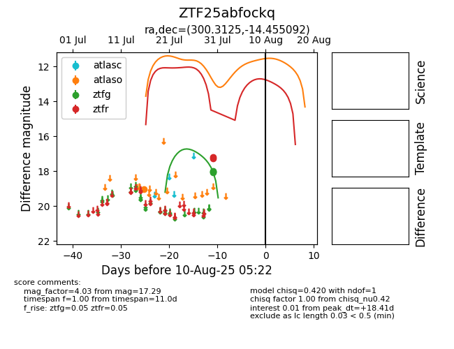

Target ZTF25abfockq at 2025-08-10 05:22, see:
FINK: fink-portal.org/ZTF25abfockq
Lasair: lasair-ztf.lsst.ac.uk/objects/ZTF25abfockq
ALeRCE: alerce.online/object/ZTF25abfockq
alt names
ZTF25abfockq (ztf,fink)
coordinates:
equatorial (ra, dec) = (300.3125,-14.45509)
galactic (l, b) = (27.3840,-21.85760)
photometry
last atlaso=19.06, ztfg=18.06, ztfr=17.29
1 atlaso, 3 ztfg, 2 ztfr detections
